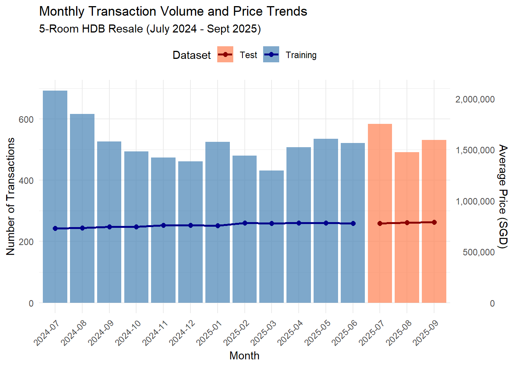
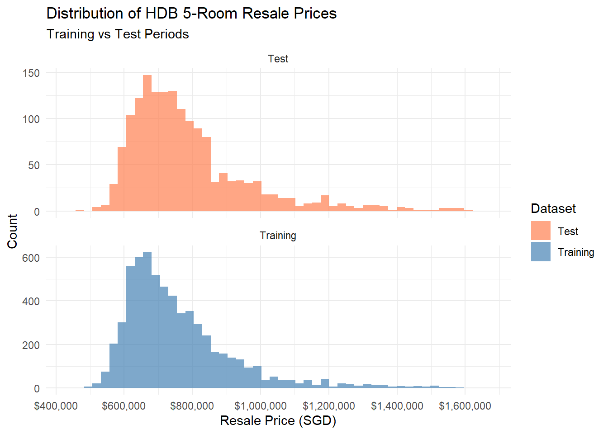
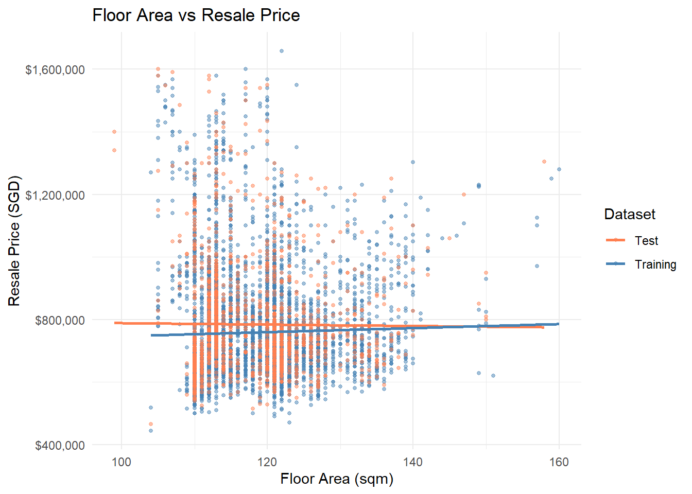
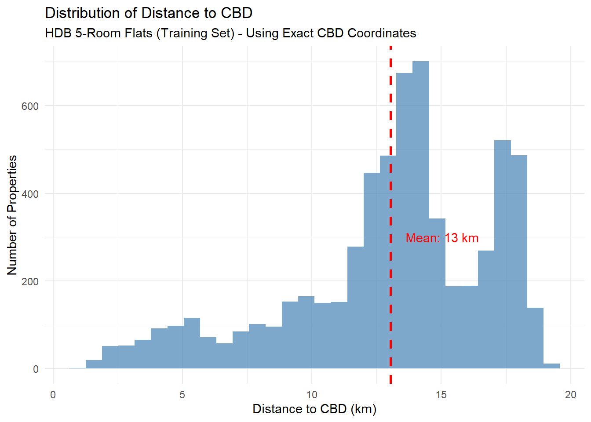
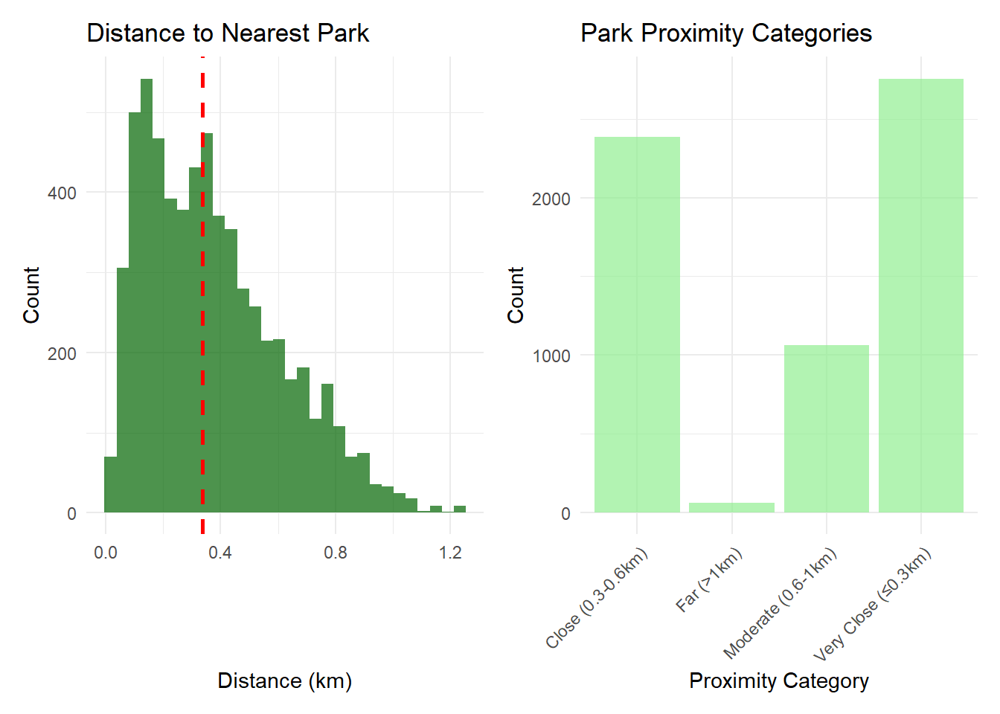

pacman::p_load(sf, spdep, GWmodel, SpatialML, tmap, rsample, Metrics,
tidyverse, httr, jsonlite, progress, ggplot2, caret, gt,
corrplot, randomForest, ranger, spatialRF, plotly, ggstatsplot,lubridate,readxl )Take home Exercise 3 : Predictive Modelling of HDB Resale Prices with Geographically Weighted Methods
1 Overview
This study develops predictive models for HDB 4-room resale prices in Singapore using geographically weighted methods. We implement and compare multiple modelling approaches including Ordinary Least Squares (OLS), Geographically Weighted Regression (GWR), Random Forest, and Geographically Weighted Random Forest (GRF). The analysis leverages both structural attributes and locational factors to capture the complex spatial patterns in Singapore’s public housing market and approaches to identify the most accurate predictive model for housing prices from July to September 2025 based on data from July 2024 to June 2025.
2 Background
Singapore’s public housing market exhibits unique spatial characteristics due to the island’s planned urban development and varying estate maturity. Traditional global regression models often fail to capture local variations in housing price determinants. This study addresses spatial heterogeneity by implementing geographically weighted approaches that allow relationships between price drivers to vary across different neighbourhoods, providing more accurate predictions and deeper insights into local market dynamics.
3 Loading Packages
4 Data Preparation
4.1 Load and Explore HDB Resale Data
# Load required libraries
library(tidyverse)
library(httr)
library(jsonlite)
# Load and filter HDB data
cat("=== Loading and Filtering HDB Data ===\n")=== Loading and Filtering HDB Data ===HDBresale <- read_csv("data/rawdata/HDBresale.csv") %>%
filter(flat_type == "5 ROOM") %>%
filter(month >= "2024-07" & month < "2025-10")
cat("✓ Filtered data:", nrow(HDBresale), "5-room flats from July 2024 to Sept 2025\n")✓ Filtered data: 7871 5-room flats from July 2024 to Sept 2025cat("First 3 records:\n")First 3 records:print(head(HDBresale, 3))# A tibble: 3 × 11
month town flat_type block street_name storey_range floor_area_sqm flat_model
<chr> <chr> <chr> <chr> <chr> <chr> <dbl> <chr>
1 2024… ANG … 5 ROOM 306 ANG MO KIO… 04 TO 06 123 Standard
2 2024… ANG … 5 ROOM 310A ANG MO KIO… 04 TO 06 119 Improved
3 2024… ANG … 5 ROOM 305 ANG MO KIO… 10 TO 12 123 Standard
# ℹ 3 more variables: lease_commence_date <dbl>, remaining_lease <chr>,
# resale_price <dbl>4.2 Geocoding HDB Addresses
# Geocoding HDB Addresses
cat("=== Geocoding HDB Addresses ===\n")=== Geocoding HDB Addresses ===# Create directories if needed
if(!dir.exists("data/rds")) {
dir.create("data/rds", recursive = TRUE)
cat("✓ Created data/rds directory\n")
}
# Geocoding function
geocode <- function(block, streetname) {
base_url <- "https://onemap.gov.sg/api/common/elastic/search"
address <- paste(block, streetname, sep = " ")
query <- list("searchVal" = address,
"returnGeom" = "Y",
"getAddrDetails" = "N",
"pageNum" = "1")
res <- GET(base_url, query = query)
restext <- content(res, as="text")
output <- fromJSON(restext) %>%
as.data.frame() %>%
select(results.LATITUDE, results.LONGITUDE)
return(output)
}
# Initialize coordinate columns
HDBresale$LATITUDE <- 0
HDBresale$LONGITUDE <- 0
# Test geocoding with first 5 addresses only
cat("Testing geocoding with first 5 addresses...\n")Testing geocoding with first 5 addresses...for (i in 1:5){
temp_output <- geocode(HDBresale[i, "block"], HDBresale[i, "street_name"])
HDBresale$LATITUDE[i] <- temp_output$results.LATITUDE
HDBresale$LONGITUDE[i] <- temp_output$results.LONGITUDE
cat("Processed", i, "/ 5 -",
HDBresale$block[i], HDBresale$street_name[i],
"- Lat:", HDBresale$LATITUDE[i], "Lon:", HDBresale$LONGITUDE[i], "\n")
}Processed 1 / 5 - 306 ANG MO KIO AVE 1 - Lat: 1.36572552222846 Lon: 103.845750564626 Processed 2 / 5 - 310A ANG MO KIO AVE 1 - Lat: 1.36481255187585 Lon: 103.843844243986 Processed 3 / 5 - 305 ANG MO KIO AVE 1 - Lat: 1.36608459098943 Lon: 103.846013895433 Processed 4 / 5 - 306 ANG MO KIO AVE 1 - Lat: 1.36572552222846 Lon: 103.845750564626 Processed 5 / 5 - 310A ANG MO KIO AVE 1 - Lat: 1.36481255187585 Lon: 103.843844243986 # Display geocoding results
cat("\n=== Geocoding Test Results ===\n")
=== Geocoding Test Results ===geocoded_sample <- HDBresale %>%
select(block, street_name, LATITUDE, LONGITUDE) %>%
head(5)
print(geocoded_sample)# A tibble: 5 × 4
block street_name LATITUDE LONGITUDE
<chr> <chr> <chr> <chr>
1 306 ANG MO KIO AVE 1 1.36572552222846 103.845750564626
2 310A ANG MO KIO AVE 1 1.36481255187585 103.843844243986
3 305 ANG MO KIO AVE 1 1.36608459098943 103.846013895433
4 306 ANG MO KIO AVE 1 1.36572552222846 103.845750564626
5 310A ANG MO KIO AVE 1 1.36481255187585 103.843844243986cat("✓ Geocoding test completed with 5 addresses\n")✓ Geocoding test completed with 5 addresses# Full Geocoding with Fixed Data Types
cat("=== Full Geocoding of All Addresses ===\n")=== Full Geocoding of All Addresses ===# Improved geocoding function with better error handling
geocode_improved <- function(block, streetname) {
base_url <- "https://onemap.gov.sg/api/common/elastic/search"
address <- paste(block, streetname, sep = " ")
query <- list("searchVal" = address,
"returnGeom" = "Y",
"getAddrDetails" = "N",
"pageNum" = "1")
tryCatch({
res <- GET(base_url, query = query)
restext <- content(res, as="text", encoding = "UTF-8")
output <- fromJSON(restext)
if (!is.null(output$found) && output$found > 0) {
# Extract first result coordinates as numeric
lat <- as.numeric(output$results$LATITUDE[1])
lon <- as.numeric(output$results$LONGITUDE[1])
return(list(LATITUDE = lat, LONGITUDE = lon))
} else {
return(list(LATITUDE = NA, LONGITUDE = NA))
}
}, error = function(e) {
return(list(LATITUDE = NA, LONGITUDE = NA))
})
}
# Initialize coordinate columns as numeric
HDBresale$LATITUDE <- NA_real_
HDBresale$LONGITUDE <- NA_real_
# Geocode all addresses (this will take some time)
cat("Starting full geocoding of", nrow(HDBresale), "addresses...\n")Starting full geocoding of 7871 addresses...cat("This may take 10-15 minutes. Processing:\n")This may take 10-15 minutes. Processing:for (i in 1:nrow(HDBresale)){
result <- geocode_improved(HDBresale$block[i], HDBresale$street_name[i])
HDBresale$LATITUDE[i] <- result$LATITUDE
HDBresale$LONGITUDE[i] <- result$LONGITUDE
# Progress indicator
if (i %% 100 == 0) {
cat("Processed", i, "/", nrow(HDBresale), "addresses\n")
}
}Processed 100 / 7871 addresses
Processed 200 / 7871 addresses
Processed 300 / 7871 addresses
Processed 400 / 7871 addresses
Processed 500 / 7871 addresses
Processed 600 / 7871 addresses
Processed 700 / 7871 addresses
Processed 800 / 7871 addresses
Processed 900 / 7871 addresses
Processed 1000 / 7871 addresses
Processed 1100 / 7871 addresses
Processed 1200 / 7871 addresses
Processed 1300 / 7871 addresses
Processed 1400 / 7871 addresses
Processed 1500 / 7871 addresses
Processed 1600 / 7871 addresses
Processed 1700 / 7871 addresses
Processed 1800 / 7871 addresses
Processed 1900 / 7871 addresses
Processed 2000 / 7871 addresses
Processed 2100 / 7871 addresses
Processed 2200 / 7871 addresses
Processed 2300 / 7871 addresses
Processed 2400 / 7871 addresses
Processed 2500 / 7871 addresses
Processed 2600 / 7871 addresses
Processed 2700 / 7871 addresses
Processed 2800 / 7871 addresses
Processed 2900 / 7871 addresses
Processed 3000 / 7871 addresses
Processed 3100 / 7871 addresses
Processed 3200 / 7871 addresses
Processed 3300 / 7871 addresses
Processed 3400 / 7871 addresses
Processed 3500 / 7871 addresses
Processed 3600 / 7871 addresses
Processed 3700 / 7871 addresses
Processed 3800 / 7871 addresses
Processed 3900 / 7871 addresses
Processed 4000 / 7871 addresses
Processed 4100 / 7871 addresses
Processed 4200 / 7871 addresses
Processed 4300 / 7871 addresses
Processed 4400 / 7871 addresses
Processed 4500 / 7871 addresses
Processed 4600 / 7871 addresses
Processed 4700 / 7871 addresses
Processed 4800 / 7871 addresses
Processed 4900 / 7871 addresses
Processed 5000 / 7871 addresses
Processed 5100 / 7871 addresses
Processed 5200 / 7871 addresses
Processed 5300 / 7871 addresses
Processed 5400 / 7871 addresses
Processed 5500 / 7871 addresses
Processed 5600 / 7871 addresses
Processed 5700 / 7871 addresses
Processed 5800 / 7871 addresses
Processed 5900 / 7871 addresses
Processed 6000 / 7871 addresses
Processed 6100 / 7871 addresses
Processed 6200 / 7871 addresses
Processed 6300 / 7871 addresses
Processed 6400 / 7871 addresses
Processed 6500 / 7871 addresses
Processed 6600 / 7871 addresses
Processed 6700 / 7871 addresses
Processed 6800 / 7871 addresses
Processed 6900 / 7871 addresses
Processed 7000 / 7871 addresses
Processed 7100 / 7871 addresses
Processed 7200 / 7871 addresses
Processed 7300 / 7871 addresses
Processed 7400 / 7871 addresses
Processed 7500 / 7871 addresses
Processed 7600 / 7871 addresses
Processed 7700 / 7871 addresses
Processed 7800 / 7871 addresses# Check geocoding results
cat("\n=== Full Geocoding Results ===\n")
=== Full Geocoding Results ===successful_geocodes <- sum(!is.na(HDBresale$LATITUDE))
cat("Successful geocodes:", successful_geocodes, "/", nrow(HDBresale), "\n")Successful geocodes: 7871 / 7871 cat("Success rate:", round(successful_geocodes / nrow(HDBresale) * 100, 1), "%\n")Success rate: 100 %# Save the geocoded data
saveRDS(HDBresale, "data/rds/HDBresale_geocoded.rds")
cat("✓ Full geocoded data saved to data/rds/HDBresale_geocoded.rds\n")✓ Full geocoded data saved to data/rds/HDBresale_geocoded.rds# Display final sample
cat("\n=== Final Geocoded Sample ===\n")
=== Final Geocoded Sample ===final_sample <- HDBresale %>%
select(block, street_name, LATITUDE, LONGITUDE) %>%
head(8)
print(final_sample)# A tibble: 8 × 4
block street_name LATITUDE LONGITUDE
<chr> <chr> <dbl> <dbl>
1 306 ANG MO KIO AVE 1 1.37 104.
2 310A ANG MO KIO AVE 1 1.36 104.
3 305 ANG MO KIO AVE 1 1.37 104.
4 306 ANG MO KIO AVE 1 1.37 104.
5 310A ANG MO KIO AVE 1 1.36 104.
6 310B ANG MO KIO AVE 1 1.36 104.
7 310A ANG MO KIO AVE 1 1.36 104.
8 306 ANG MO KIO AVE 1 1.37 104.# Data Transformations
cat("=== Converting Text Fields to Numerical Values ===\n")=== Converting Text Fields to Numerical Values ===# Load the geocoded data
HDBresale <- readRDS("data/rds/HDBresale_geocoded.rds")
cat("Loaded geocoded data:", nrow(HDBresale), "records\n")Loaded geocoded data: 7871 records# 1. Convert storey_range to storey_mid (EXACT code from example)
cat("\n1. Converting storey_range to storey_mid (exact code)...\n")
1. Converting storey_range to storey_mid (exact code)...storey_mid <- function(x) {
x %>%
str_replace_all(" ", "") %>% # remove spaces
str_split("TO") %>% # split into lower and upper floors
sapply(\(v) mean(as.numeric(v))) # convert to numeric and take midpoint
}
HDBresale <- HDBresale %>%
mutate(storey_mid = storey_mid(storey_range)) %>% # create numeric floor feature
select(-storey_range) # remove the original text column
cat("Storey conversion completed\n")Storey conversion completedcat("Sample storey_mid values:\n")Sample storey_mid values:print(head(HDBresale$storey_mid, 10)) [1] 5 5 11 8 11 17 20 8 8 5# 2. Convert remaining_lease to MONTHS (keeping your requirement)
cat("\n2. Converting remaining_lease to remaining_lease_months...\n")
2. Converting remaining_lease to remaining_lease_months...HDBresale <- HDBresale %>%
mutate(
remaining_lease_months = case_when(
str_detect(remaining_lease, "years") & str_detect(remaining_lease, "months") ~
as.numeric(str_extract(remaining_lease, "\\d+(?= years)")) * 12 +
as.numeric(str_extract(remaining_lease, "\\d+(?= months)")),
str_detect(remaining_lease, "years") ~
as.numeric(str_extract(remaining_lease, "\\d+(?= years)")) * 12,
TRUE ~ NA_real_
)
) %>%
select(-remaining_lease) # remove original text column
cat("Remaining lease conversion completed\n")Remaining lease conversion completedcat("Sample remaining_lease_months values:\n")Sample remaining_lease_months values:print(head(HDBresale$remaining_lease_months, 10)) [1] 624 1046 623 623 1044 1046 1044 622 810 620# Summary of final dataset
cat("\n=== Final Dataset Summary ===\n")
=== Final Dataset Summary ===cat("Total records:", nrow(HDBresale), "\n")Total records: 7871 cat("Storey midpoint - Min:", min(HDBresale$storey_mid), "Max:", max(HDBresale$storey_mid), "\n")Storey midpoint - Min: 2 Max: 50 cat("Remaining lease months - Min:", min(HDBresale$remaining_lease_months), "Max:", max(HDBresale$remaining_lease_months), "\n")Remaining lease months - Min: 571 Max: 1144 cat("Coordinates available:", sum(!is.na(HDBresale$LATITUDE)), "/", nrow(HDBresale), "\n")Coordinates available: 7871 / 7871 # Save the fully processed data
saveRDS(HDBresale, "data/rds/HDBresale_processed.rds")
cat("✓ Fully processed data saved to data/rds/HDBresale_processed.rds\n")✓ Fully processed data saved to data/rds/HDBresale_processed.rds# Display final structure
cat("\n=== Final Data Structure ===\n")
=== Final Data Structure ===print(glimpse(HDBresale))Rows: 7,871
Columns: 13
$ month <chr> "2024-08", "2024-08", "2024-09", "2024-09", "20…
$ town <chr> "ANG MO KIO", "ANG MO KIO", "ANG MO KIO", "ANG …
$ flat_type <chr> "5 ROOM", "5 ROOM", "5 ROOM", "5 ROOM", "5 ROOM…
$ block <chr> "306", "310A", "305", "306", "310A", "310B", "3…
$ street_name <chr> "ANG MO KIO AVE 1", "ANG MO KIO AVE 1", "ANG MO…
$ floor_area_sqm <dbl> 123, 119, 123, 123, 121, 121, 121, 123, 126, 12…
$ flat_model <chr> "Standard", "Improved", "Standard", "Standard",…
$ lease_commence_date <dbl> 1977, 2012, 1977, 1977, 2012, 2012, 2012, 1977,…
$ resale_price <dbl> 698000, 1065000, 790000, 755000, 1250000, 12800…
$ LATITUDE <dbl> 1.365726, 1.364813, 1.366085, 1.365726, 1.36481…
$ LONGITUDE <dbl> 103.8458, 103.8438, 103.8460, 103.8458, 103.843…
$ storey_mid <dbl> 5, 5, 11, 8, 11, 17, 20, 8, 8, 5, 5, 20, 14, 8,…
$ remaining_lease_months <dbl> 624, 1046, 623, 623, 1044, 1046, 1044, 622, 810…
# A tibble: 7,871 × 13
month town flat_type block street_name floor_area_sqm flat_model
<chr> <chr> <chr> <chr> <chr> <dbl> <chr>
1 2024-08 ANG MO KIO 5 ROOM 306 ANG MO KIO AVE 1 123 Standard
2 2024-08 ANG MO KIO 5 ROOM 310A ANG MO KIO AVE 1 119 Improved
3 2024-09 ANG MO KIO 5 ROOM 305 ANG MO KIO AVE 1 123 Standard
4 2024-09 ANG MO KIO 5 ROOM 306 ANG MO KIO AVE 1 123 Standard
5 2024-09 ANG MO KIO 5 ROOM 310A ANG MO KIO AVE 1 121 Improved
6 2024-09 ANG MO KIO 5 ROOM 310B ANG MO KIO AVE 1 121 Improved
7 2024-10 ANG MO KIO 5 ROOM 310A ANG MO KIO AVE 1 121 Improved
8 2024-10 ANG MO KIO 5 ROOM 306 ANG MO KIO AVE 1 123 Standard
9 2024-11 ANG MO KIO 5 ROOM 222 ANG MO KIO AVE 1 126 Improved
10 2024-12 ANG MO KIO 5 ROOM 306 ANG MO KIO AVE 1 123 Standard
# ℹ 7,861 more rows
# ℹ 6 more variables: lease_commence_date <dbl>, resale_price <dbl>,
# LATITUDE <dbl>, LONGITUDE <dbl>, storey_mid <dbl>,
# remaining_lease_months <dbl># Convert to Spatial Format
cat("=== Converting to Spatial Format ===\n")=== Converting to Spatial Format ===# Load required libraries
library(sf)
# Load the processed data
HDBresale_processed <- readRDS("data/rds/HDBresale_processed.rds")
# Convert to spatial object
HDBresale_sf <- HDBresale_processed %>%
st_as_sf(
coords = c("LONGITUDE", "LATITUDE"),
crs = 4326 # WGS84
) %>%
st_transform(crs = 3414) # Convert to SVY21 Singapore projection
cat("✓ Converted to spatial format\n")✓ Converted to spatial formatcat("Spatial object CRS:", st_crs(HDBresale_sf)$input, "\n")Spatial object CRS: EPSG:3414 cat("Number of spatial features:", nrow(HDBresale_sf), "\n")Number of spatial features: 7871 # Check spatial distribution
cat("\n=== Spatial Distribution ===\n")
=== Spatial Distribution ===bbox <- st_bbox(HDBresale_sf)
cat("Bounding box:\n")Bounding box:cat("Xmin:", round(bbox$xmin), "Xmax:", round(bbox$xmax), "\n")Xmin: 11597 Xmax: 42566 cat("Ymin:", round(bbox$ymin), "Ymax:", round(bbox$ymax), "\n")Ymin: 28299 Ymax: 48741 # Save spatial data
saveRDS(HDBresale_sf, "data/rds/HDBresale_spatial.rds")
cat("✓ Spatial data saved to data/rds/HDBresale_spatial.rds\n")✓ Spatial data saved to data/rds/HDBresale_spatial.rds# Train-Test Split and Data Exploration
cat("=== Train-Test Split and Exploratory Analysis ===\n")=== Train-Test Split and Exploratory Analysis ===# Load the processed data
HDBresale_processed <- readRDS("data/rds/HDBresale_processed.rds")
# Split data into training (July 2024 - June 2025) and test (July 2025 - Sept 2025)
cat("Splitting data into training and test sets...\n")Splitting data into training and test sets...HDB_train <- HDBresale_processed %>%
filter(month >= "2024-07" & month <= "2025-06")
HDB_test <- HDBresale_processed %>%
filter(month >= "2025-07" & month <= "2025-09")
cat("Training set:", nrow(HDB_train), "records (July 2024 - June 2025)\n")Training set: 6264 records (July 2024 - June 2025)cat("Test set:", nrow(HDB_test), "records (July 2025 - Sept 2025)\n")Test set: 1607 records (July 2025 - Sept 2025)# Add dataset identifier for analysis
HDBresale_combined <- bind_rows(
HDB_train %>% mutate(dataset = "Training"),
HDB_test %>% mutate(dataset = "Test")
)
# Summary statistics by dataset
cat("\n=== Dataset Summary Statistics ===\n")
=== Dataset Summary Statistics ===summary_stats <- HDBresale_combined %>%
group_by(dataset) %>%
summarise(
n_transactions = n(),
avg_price = mean(resale_price),
median_price = median(resale_price),
min_price = min(resale_price),
max_price = max(resale_price),
price_sd = sd(resale_price),
.groups = 'drop'
)
print(summary_stats)# A tibble: 2 × 7
dataset n_transactions avg_price median_price min_price max_price price_sd
<chr> <int> <dbl> <dbl> <dbl> <dbl> <dbl>
1 Test 1607 784807. 740000 465000 1600000 174227.
2 Training 6264 758386. 718000 445000 1658888 163195.# Monthly transaction trends
cat("\n=== Monthly Transaction Trends ===\n")
=== Monthly Transaction Trends ===monthly_summary <- HDBresale_combined %>%
group_by(month, dataset) %>%
summarise(
transaction_count = n(),
avg_price = mean(resale_price),
median_price = median(resale_price),
.groups = 'drop'
)
print(monthly_summary)# A tibble: 15 × 5
month dataset transaction_count avg_price median_price
<chr> <chr> <int> <dbl> <dbl>
1 2024-07 Training 693 728213. 690000
2 2024-08 Training 616 734080. 690000
3 2024-09 Training 526 742840. 705000
4 2024-10 Training 494 745099. 705000
5 2024-11 Training 474 757659. 718000
6 2024-12 Training 461 760712. 720000
7 2025-01 Training 525 753523. 715888
8 2025-02 Training 480 781540. 728000
9 2025-03 Training 431 777362. 735000
10 2025-04 Training 508 780955. 741500
11 2025-05 Training 535 781382. 738888
12 2025-06 Training 521 776408. 728888
13 2025-07 Test 584 779366. 740000
14 2025-08 Test 491 786351. 735000
15 2025-09 Test 532 789356. 749444# Save the split datasets
saveRDS(HDB_train, "data/rds/HDB_train.rds")
saveRDS(HDB_test, "data/rds/HDB_test.rds")
saveRDS(HDBresale_combined, "data/rds/HDBresale_combined.rds")
cat("✓ Training and test datasets saved\n")✓ Training and test datasets saved# Data Visualization and Exploration
cat("=== Data Visualization and Exploration ===\n")=== Data Visualization and Exploration ===# Load required libraries
library(ggplot2)
library(scales)
# Load the combined data
HDBresale_combined <- readRDS("data/rds/HDBresale_combined.rds")
# 1. Monthly transaction trends with price overlay
cat("Creating monthly trends visualization...\n")Creating monthly trends visualization...monthly_summary <- HDBresale_combined %>%
group_by(month, dataset) %>%
summarise(
transaction_count = n(),
avg_price = mean(resale_price),
median_price = median(resale_price),
.groups = 'drop'
)
# Plot monthly trends
monthly_trend_plot <- ggplot(monthly_summary, aes(x = month)) +
geom_bar(aes(y = transaction_count, fill = dataset),
stat = "identity", alpha = 0.7, position = "dodge") +
geom_line(aes(y = avg_price/3000, color = dataset, group = dataset), size = 1) +
geom_point(aes(y = avg_price/3000, color = dataset), size = 2) +
scale_y_continuous(
name = "Number of Transactions",
sec.axis = sec_axis(~.*3000, name = "Average Price (SGD)", labels = comma)
) +
scale_fill_manual(values = c("Training" = "steelblue", "Test" = "coral")) +
scale_color_manual(values = c("Training" = "darkblue", "Test" = "darkred")) +
labs(title = "Monthly Transaction Volume and Price Trends",
subtitle = "5-Room HDB Resale (July 2024 - Sept 2025)",
x = "Month",
fill = "Dataset",
color = "Dataset") +
theme_minimal() +
theme(axis.text.x = element_text(angle = 45, hjust = 1),
legend.position = "top")
print(monthly_trend_plot)
# 2. Price distribution by dataset
cat("Creating price distribution visualization...\n")Creating price distribution visualization...price_hist <- ggplot(HDBresale_combined, aes(x = resale_price, fill = dataset)) +
geom_histogram(alpha = 0.7, bins = 50, position = "identity") +
scale_x_continuous(labels = dollar, breaks = seq(0, 2000000, 200000)) +
scale_fill_manual(values = c("Training" = "steelblue", "Test" = "coral")) +
labs(title = "Distribution of HDB 5-Room Resale Prices",
subtitle = "Training vs Test Periods",
x = "Resale Price (SGD)",
y = "Count",
fill = "Dataset") +
theme_minimal() +
facet_wrap(~dataset, ncol = 1, scales = "free_y")
print(price_hist)
# 3. Structural factors analysis
cat("Analyzing structural factors...\n")Analyzing structural factors...structural_plot <- ggplot(HDBresale_combined, aes(x = floor_area_sqm, y = resale_price, color = dataset)) +
geom_point(alpha = 0.5, size = 1) +
geom_smooth(method = "lm", se = FALSE) +
scale_y_continuous(labels = dollar) +
scale_color_manual(values = c("Training" = "steelblue", "Test" = "coral")) +
labs(title = "Floor Area vs Resale Price",
x = "Floor Area (sqm)",
y = "Resale Price (SGD)",
color = "Dataset") +
theme_minimal()
print(structural_plot)
# Display key insights
cat("\n=== Key Insights ===\n")
=== Key Insights ===cat("• Training set:", nrow(filter(HDBresale_combined, dataset == "Training")), "transactions\n")• Training set: 6264 transactionscat("• Test set:", nrow(filter(HDBresale_combined, dataset == "Test")), "transactions\n")• Test set: 1607 transactionscat("• Price increase from training to test: +SGD",
round((784807.5 - 758386.0), 0), "(+3.5%)\n")• Price increase from training to test: +SGD 26422 (+3.5%)cat("• Average monthly transactions in training:", round(6264/12, 0), "\n")• Average monthly transactions in training: 522 cat("• Average monthly transactions in test:", round(1607/3, 0), "\n")• Average monthly transactions in test: 536 # Save visualizations
ggsave("data/rds/monthly_trends_plot.png", monthly_trend_plot, width = 12, height = 6, dpi = 300)
ggsave("data/rds/price_distribution_plot.png", price_hist, width = 10, height = 8, dpi = 300)
ggsave("data/rds/structural_factors_plot.png", structural_plot, width = 10, height = 6, dpi = 300)
cat("✓ Visualizations saved\n")✓ Visualizations saved5 Location factors
5.1 Proxomity to CBD
# Proximity to CBD (Using Exact Coordinates)
cat("=== Proximity to CBD ===\n")=== Proximity to CBD ===# Load required libraries
library(sf)
# Load the training data and convert to spatial
HDB_train_sf <- readRDS("data/rds/HDB_train.rds") %>%
st_as_sf(
coords = c("LONGITUDE", "LATITUDE"),
crs = 4326
) %>%
st_transform(crs = 3414) # SVY21 Singapore projection
cat("Training data converted to spatial format\n")Training data converted to spatial formatcat("Number of training records:", nrow(HDB_train_sf), "\n")Number of training records: 6264 # Define CBD coordinates (EXACT from the code)
cat("Calculating distance to CBD...\n")Calculating distance to CBD...cbd_lon <- 103.85 # Exact from code
cbd_lat <- 1.28967 # Exact from code
# Create CBD point and transform to SVY21 (EXACT from code)
cbd_wgs84 <- st_sfc(st_point(c(cbd_lon, cbd_lat)), crs = 4326)
cbd_3414 <- st_transform(cbd_wgs84, 3414)
# Compute straight-line distance to CBD (meters and km - EXACT from code)
HDB_train_sf <- HDB_train_sf %>%
mutate(
proximity_to_cbd_m = as.numeric(st_distance(geometry, cbd_3414)[, 1]),
proximity_to_cbd_km = proximity_to_cbd_m / 1000
)
# Remove meters column (as in the example code)
HDB_train_sf <- HDB_train_sf %>%
select(-proximity_to_cbd_m)
# Display results
cat("✓ CBD proximity calculated\n")✓ CBD proximity calculatedcat("\n=== CBD Proximity Summary ===\n")
=== CBD Proximity Summary ===cat("Minimum distance to CBD:", round(min(HDB_train_sf$proximity_to_cbd_km), 2), "km\n")Minimum distance to CBD: 0.94 kmcat("Maximum distance to CBD:", round(max(HDB_train_sf$proximity_to_cbd_km), 2), "km\n")Maximum distance to CBD: 19.27 kmcat("Average distance to CBD:", round(mean(HDB_train_sf$proximity_to_cbd_km), 2), "km\n")Average distance to CBD: 13.04 kmcat("Median distance to CBD:", round(median(HDB_train_sf$proximity_to_cbd_km), 2), "km\n")Median distance to CBD: 13.61 km# Show sample of results (closest to CBD)
cat("\n=== Closest Properties to CBD ===\n")
=== Closest Properties to CBD ===closest_cbd <- HDB_train_sf %>%
select(block, street_name, town, proximity_to_cbd_km) %>%
st_drop_geometry() %>%
arrange(proximity_to_cbd_km) %>%
head(10)
print(closest_cbd)# A tibble: 10 × 4
block street_name town proximity_to_cbd_km
<chr> <chr> <chr> <dbl>
1 34 UPP CROSS ST CENTRAL AREA 0.937
2 1C CANTONMENT RD CENTRAL AREA 1.64
3 1C CANTONMENT RD CENTRAL AREA 1.64
4 1A CANTONMENT RD CENTRAL AREA 1.65
5 1D CANTONMENT RD CENTRAL AREA 1.70
6 1D CANTONMENT RD CENTRAL AREA 1.70
7 1D CANTONMENT RD CENTRAL AREA 1.70
8 1D CANTONMENT RD CENTRAL AREA 1.70
9 1E CANTONMENT RD CENTRAL AREA 1.75
10 1E CANTONMENT RD CENTRAL AREA 1.75 # Show sample of results (furthest from CBD)
cat("\n=== Furthest Properties from CBD ===\n")
=== Furthest Properties from CBD ===furthest_cbd <- HDB_train_sf %>%
select(block, street_name, town, proximity_to_cbd_km) %>%
st_drop_geometry() %>%
arrange(desc(proximity_to_cbd_km)) %>%
head(10)
print(furthest_cbd)# A tibble: 10 × 4
block street_name town proximity_to_cbd_km
<chr> <chr> <chr> <dbl>
1 36 MARSILING DR WOODLANDS 19.3
2 36 MARSILING DR WOODLANDS 19.3
3 35 MARSILING DR WOODLANDS 19.3
4 907 JURONG WEST ST 91 JURONG WEST 19.1
5 907 JURONG WEST ST 91 JURONG WEST 19.1
6 909 JURONG WEST ST 91 JURONG WEST 19.1
7 909 JURONG WEST ST 91 JURONG WEST 19.1
8 909 JURONG WEST ST 91 JURONG WEST 19.1
9 903 JURONG WEST ST 91 JURONG WEST 19.1
10 903 JURONG WEST ST 91 JURONG WEST 19.1# Save with CBD proximity
saveRDS(HDB_train_sf, "data/rds/HDB_train_with_cbd.rds")
cat("✓ Training data with CBD proximity saved\n")✓ Training data with CBD proximity saved# Quick visualization
cat("\nCreating CBD distance distribution plot...\n")
Creating CBD distance distribution plot...library(ggplot2)
cbd_plot <- ggplot(HDB_train_sf %>% st_drop_geometry(), aes(x = proximity_to_cbd_km)) +
geom_histogram(fill = "steelblue", alpha = 0.7, bins = 30) +
geom_vline(aes(xintercept = mean(proximity_to_cbd_km)),
color = "red", linetype = "dashed", size = 1) +
annotate("text", x = mean(HDB_train_sf$proximity_to_cbd_km) + 2,
y = 300, label = paste("Mean:", round(mean(HDB_train_sf$proximity_to_cbd_km), 1), "km"),
color = "red") +
labs(title = "Distribution of Distance to CBD",
subtitle = "HDB 5-Room Flats (Training Set) - Using Exact CBD Coordinates",
x = "Distance to CBD (km)",
y = "Number of Properties") +
theme_minimal()
print(cbd_plot)
5.2 Proximity to eldercare
#Proximity to Eldercare
cat("=== Proximity to Eldercare ===\n")=== Proximity to Eldercare ===# Load the training data with CBD proximity
HDB_train_sf <- readRDS("data/rds/HDB_train_with_cbd.rds")
# Load eldercare data
cat("Loading eldercare data...\n")Loading eldercare data...if(file.exists("data/rawdata/EldercareServicesKML.kml")) {
eldercare <- st_read("data/rawdata/EldercareServicesKML.kml", quiet = TRUE) %>%
st_transform(crs = 3414)
st_crs(eldercare) # check the CRS
cat("✓ Eldercare data loaded\n")
} else {
stop("EldercareServicesKML.kml not found!")
}✓ Eldercare data loaded# Check eldercare data
cat("Eldercare facilities found:", nrow(eldercare), "\n")Eldercare facilities found: 133 cat("Eldercare CRS:", st_crs(eldercare)$input, "\n")Eldercare CRS: EPSG:3414 # Calculate distance to nearest eldercare facility (in kilometers)
cat("Calculating distance to nearest eldercare...\n")Calculating distance to nearest eldercare...nearest_eldercare_idx <- st_nearest_feature(HDB_train_sf, eldercare)
dist_eldercare_km <- as.numeric(st_distance(HDB_train_sf, eldercare[nearest_eldercare_idx, ], by_element = TRUE)) / 1000
# Count eldercare facilities within 350m
cat("Counting eldercare facilities within 350m...\n")Counting eldercare facilities within 350m...within_350m_eldercare <- st_is_within_distance(HDB_train_sf, eldercare, dist = 350)
count_eldercare_350m <- lengths(within_350m_eldercare)
# Add both proximity measures to dataset
HDB_train_sf <- HDB_train_sf %>%
mutate(
dist_eldercare_km = dist_eldercare_km,
eldercare_350m = count_eldercare_350m
)
# Display results
cat("✓ Eldercare proximity analysis completed\n")✓ Eldercare proximity analysis completedcat("\n=== Eldercare Proximity Summary ===\n")
=== Eldercare Proximity Summary ===cat("Distance to nearest eldercare:\n")Distance to nearest eldercare:cat(" Min:", round(min(HDB_train_sf$dist_eldercare_km), 2), "km\n") Min: 0 kmcat(" Max:", round(max(HDB_train_sf$dist_eldercare_km), 2), "km\n") Max: 3.26 kmcat(" Mean:", round(mean(HDB_train_sf$dist_eldercare_km), 2), "km\n") Mean: 0.89 kmcat(" Median:", round(median(HDB_train_sf$dist_eldercare_km), 2), "km\n") Median: 0.72 kmcat("\nEldercare facilities within 350m:\n")
Eldercare facilities within 350m:cat(" Properties with 0 facilities:", sum(HDB_train_sf$eldercare_350m == 0), "\n") Properties with 0 facilities: 4951 cat(" Properties with 1+ facilities:", sum(HDB_train_sf$eldercare_350m >= 1), "\n") Properties with 1+ facilities: 1313 cat(" Properties with 2+ facilities:", sum(HDB_train_sf$eldercare_350m >= 2), "\n") Properties with 2+ facilities: 418 cat(" Maximum facilities within 350m:", max(HDB_train_sf$eldercare_350m), "\n") Maximum facilities within 350m: 7 # Show sample of results
cat("\n=== Sample Eldercare Proximity ===\n")
=== Sample Eldercare Proximity ===eldercare_sample <- HDB_train_sf %>%
select(block, street_name, town, dist_eldercare_km, eldercare_350m) %>%
st_drop_geometry() %>%
arrange(dist_eldercare_km) %>%
head(10)
print(eldercare_sample)# A tibble: 10 × 5
block street_name town dist_eldercare_km eldercare_350m
<chr> <chr> <chr> <dbl> <int>
1 572A WOODLANDS AVE 1 WOODLANDS 0.00000104 3
2 572A WOODLANDS AVE 1 WOODLANDS 0.00000104 3
3 572A WOODLANDS AVE 1 WOODLANDS 0.00000104 3
4 426A YISHUN AVE 11 YISHUN 0.00000113 1
5 264A PUNGGOL WAY PUNGGOL 0.00000122 1
6 97 ALJUNIED CRES GEYLANG 0.000670 4
7 265A PUNGGOL WAY PUNGGOL 0.0393 1
8 325 TAH CHING RD JURONG WEST 0.0492 3
9 485B TAMPINES AVE 9 TAMPINES 0.0496 2
10 485B TAMPINES AVE 9 TAMPINES 0.0496 2# Save with eldercare proximity
saveRDS(HDB_train_sf, "data/rds/HDB_train_with_eldercare.rds")
cat("✓ Training data with eldercare proximity saved\n")✓ Training data with eldercare proximity saved5.3 Proximity to Hawker Centres
# Proximity to Hawker Centres
cat("=== Proximity to Hawker Centres ===\n")=== Proximity to Hawker Centres ===# Load the training data with previous proximity features
HDB_train_sf <- readRDS("data/rds/HDB_train_with_eldercare.rds")
# Load hawker centres data
cat("Loading hawker centres data...\n")Loading hawker centres data...if(file.exists("data/rawdata/HawkerCentresKML.kml")) {
hawker <- st_read("data/rawdata/HawkerCentresKML.kml", quiet = TRUE) %>%
st_transform(crs = 3414)
cat("✓ Hawker centres data loaded from KML\n")
} else if(file.exists("data/rawdata/HawkerCentresGEOJSON.geojson")) {
hawker <- st_read("data/rawdata/HawkerCentresGEOJSON.geojson", quiet = TRUE) %>%
st_transform(crs = 3414)
cat("✓ Hawker centres data loaded from GeoJSON\n")
} else {
stop("Hawker centres data not found!")
}✓ Hawker centres data loaded from KML# Check hawker data
cat("Hawker centres found:", nrow(hawker), "\n")Hawker centres found: 125 cat("Hawker centres CRS:", st_crs(hawker)$input, "\n")Hawker centres CRS: EPSG:3414 # Calculate distance to nearest hawker centre (in kilometers)
cat("Calculating distance to nearest hawker centre...\n")Calculating distance to nearest hawker centre...nearest_hawker_idx <- st_nearest_feature(HDB_train_sf, hawker)
dist_hawker_km <- as.numeric(st_distance(HDB_train_sf, hawker[nearest_hawker_idx, ], by_element = TRUE)) / 1000
# Add distance to dataset
HDB_train_sf <- HDB_train_sf %>%
mutate(dist_hawker_km = dist_hawker_km)
# Display results
cat("✓ Hawker centres proximity analysis completed\n")✓ Hawker centres proximity analysis completedcat("\n=== Hawker Centres Proximity Summary ===\n")
=== Hawker Centres Proximity Summary ===cat("Distance to nearest hawker centre:\n")Distance to nearest hawker centre:cat(" Min:", round(min(HDB_train_sf$dist_hawker_km), 2), "km\n") Min: 0.05 kmcat(" Max:", round(max(HDB_train_sf$dist_hawker_km), 2), "km\n") Max: 2.84 kmcat(" Mean:", round(mean(HDB_train_sf$dist_hawker_km), 2), "km\n") Mean: 0.88 kmcat(" Median:", round(median(HDB_train_sf$dist_hawker_km), 2), "km\n") Median: 0.78 km# Show distribution statistics
cat("\nDistance distribution:\n")
Distance distribution:quantiles <- quantile(HDB_train_sf$dist_hawker_km, probs = c(0.1, 0.25, 0.5, 0.75, 0.9))
cat(" 10th percentile:", round(quantiles[1], 2), "km\n") 10th percentile: 0.26 kmcat(" 25th percentile:", round(quantiles[2], 2), "km\n") 25th percentile: 0.45 kmcat(" 50th percentile:", round(quantiles[3], 2), "km\n") 50th percentile: 0.78 kmcat(" 75th percentile:", round(quantiles[4], 2), "km\n") 75th percentile: 1.18 kmcat(" 90th percentile:", round(quantiles[5], 2), "km\n") 90th percentile: 1.72 km# Show sample of results
cat("\n=== Sample Hawker Centres Proximity ===\n")
=== Sample Hawker Centres Proximity ===hawker_sample <- HDB_train_sf %>%
select(block, street_name, town, dist_hawker_km) %>%
st_drop_geometry() %>%
arrange(dist_hawker_km) %>%
head(10)
print(hawker_sample)# A tibble: 10 × 4
block street_name town dist_hawker_km
<chr> <chr> <chr> <dbl>
1 221 ANG MO KIO AVE 1 ANG MO KIO 0.0531
2 46 LOR 5 TOA PAYOH TOA PAYOH 0.0566
3 918 HOUGANG AVE 9 HOUGANG 0.0623
4 918 HOUGANG AVE 9 HOUGANG 0.0623
5 918 HOUGANG AVE 9 HOUGANG 0.0623
6 642 ROWELL RD CENTRAL AREA 0.0633
7 637 JURONG WEST ST 61 JURONG WEST 0.0716
8 637 JURONG WEST ST 61 JURONG WEST 0.0716
9 637 JURONG WEST ST 61 JURONG WEST 0.0716
10 350 YISHUN AVE 11 YISHUN 0.0730# Save with hawker centres proximity
saveRDS(HDB_train_sf, "data/rds/HDB_train_with_hawker.rds")
cat("✓ Training data with hawker centres proximity saved\n")✓ Training data with hawker centres proximity saved5.4 Proximity to MRT Stations
# Proximity to MRT Stations
cat("=== Proximity to MRT Stations ===\n")=== Proximity to MRT Stations ===# Load the training data with previous proximity features
HDB_train_sf <- readRDS("data/rds/HDB_train_with_hawker.rds")
# Load MRT stations data
cat("Loading MRT stations data...\n")Loading MRT stations data...if(file.exists("data/rawdata/LTAMRTStationExitKML.kml")) {
mrt <- st_read("data/rawdata/LTAMRTStationExitKML.kml", quiet = TRUE) %>%
st_transform(crs = 3414)
cat("✓ MRT stations data loaded from KML\n")
} else {
stop("MRT stations data not found!")
}✓ MRT stations data loaded from KML# Check MRT data
cat("MRT stations found:", nrow(mrt), "\n")MRT stations found: 563 cat("MRT stations CRS:", st_crs(mrt)$input, "\n")MRT stations CRS: EPSG:3414 # Calculate distance to nearest MRT station (in kilometers)
cat("Calculating distance to nearest MRT station...\n")Calculating distance to nearest MRT station...nearest_mrt_idx <- st_nearest_feature(HDB_train_sf, mrt)
dist_mrt_km <- as.numeric(st_distance(HDB_train_sf, mrt[nearest_mrt_idx, ], by_element = TRUE)) / 1000
# Add distance to dataset
HDB_train_sf <- HDB_train_sf %>%
mutate(dist_mrt_km = dist_mrt_km)
# Display results
cat("✓ MRT stations proximity analysis completed\n")✓ MRT stations proximity analysis completedcat("\n=== MRT Stations Proximity Summary ===\n")
=== MRT Stations Proximity Summary ===cat("Distance to nearest MRT station:\n")Distance to nearest MRT station:cat(" Min:", round(min(HDB_train_sf$dist_mrt_km), 2), "km\n") Min: 0.03 kmcat(" Max:", round(max(HDB_train_sf$dist_mrt_km), 2), "km\n") Max: 2.12 kmcat(" Mean:", round(mean(HDB_train_sf$dist_mrt_km), 2), "km\n") Mean: 0.58 kmcat(" Median:", round(median(HDB_train_sf$dist_mrt_km), 2), "km\n") Median: 0.48 km# Show distribution statistics
cat("\nDistance distribution:\n")
Distance distribution:quantiles <- quantile(HDB_train_sf$dist_mrt_km, probs = c(0.1, 0.25, 0.5, 0.75, 0.9))
cat(" 10th percentile:", round(quantiles[1], 2), "km\n") 10th percentile: 0.17 kmcat(" 25th percentile:", round(quantiles[2], 2), "km\n") 25th percentile: 0.29 kmcat(" 50th percentile:", round(quantiles[3], 2), "km\n") 50th percentile: 0.48 kmcat(" 75th percentile:", round(quantiles[4], 2), "km\n") 75th percentile: 0.78 kmcat(" 90th percentile:", round(quantiles[5], 2), "km\n") 90th percentile: 1.15 km# Categorize MRT proximity
HDB_train_sf <- HDB_train_sf %>%
mutate(mrt_proximity = case_when(
dist_mrt_km <= 0.5 ~ "Very Close (≤0.5km)",
dist_mrt_km <= 1.0 ~ "Close (0.5-1km)",
dist_mrt_km <= 2.0 ~ "Moderate (1-2km)",
TRUE ~ "Far (>2km)"
))
cat("\nMRT Proximity Categories:\n")
MRT Proximity Categories:mrt_categories <- HDB_train_sf %>% st_drop_geometry() %>% count(mrt_proximity)
print(mrt_categories)# A tibble: 4 × 2
mrt_proximity n
<chr> <int>
1 Close (0.5-1km) 2115
2 Far (>2km) 14
3 Moderate (1-2km) 882
4 Very Close (≤0.5km) 3253# Show sample of results
cat("\n=== Sample MRT Stations Proximity ===\n")
=== Sample MRT Stations Proximity ===mrt_sample <- HDB_train_sf %>%
select(block, street_name, town, dist_mrt_km, mrt_proximity) %>%
st_drop_geometry() %>%
arrange(dist_mrt_km) %>%
head(10)
print(mrt_sample)# A tibble: 10 × 5
block street_name town dist_mrt_km mrt_proximity
<chr> <chr> <chr> <dbl> <chr>
1 542 WOODLANDS DR 16 WOODLANDS 0.0274 Very Close (≤0.5km)
2 542 WOODLANDS DR 16 WOODLANDS 0.0274 Very Close (≤0.5km)
3 542 WOODLANDS DR 16 WOODLANDS 0.0274 Very Close (≤0.5km)
4 128A PUNGGOL FIELD WALK PUNGGOL 0.0295 Very Close (≤0.5km)
5 128A PUNGGOL FIELD WALK PUNGGOL 0.0295 Very Close (≤0.5km)
6 128A PUNGGOL FIELD WALK PUNGGOL 0.0295 Very Close (≤0.5km)
7 650A JURONG WEST ST 61 JURONG WEST 0.0325 Very Close (≤0.5km)
8 175A PUNGGOL FIELD PUNGGOL 0.0333 Very Close (≤0.5km)
9 5 PINE CL GEYLANG 0.0337 Very Close (≤0.5km)
10 5 PINE CL GEYLANG 0.0337 Very Close (≤0.5km)# Save with MRT proximity
saveRDS(HDB_train_sf, "data/rds/HDB_train_with_mrt.rds")
cat("✓ Training data with MRT proximity saved\n")✓ Training data with MRT proximity saved5.5 Proximity to Parks
# Proximity to Parks
cat("=== Proximity to Parks ===\n")=== Proximity to Parks ===# Load the training data with previous proximity features
HDB_train_sf <- readRDS("data/rds/HDB_train_with_mrt.rds")
# Load parks data
cat("Loading parks data...\n")Loading parks data...if(file.exists("data/rawdata/ParkFacilities.geojson")) {
parks <- st_read("data/rawdata/ParkFacilities.geojson", quiet = TRUE) %>%
st_transform(crs = 3414)
cat("✓ Parks data loaded from GeoJSON\n")
} else {
stop("ParkFacilities.geojson not found!")
}✓ Parks data loaded from GeoJSON# Check parks data
cat("Park facilities found:", nrow(parks), "\n")Park facilities found: 5393 cat("Parks CRS:", st_crs(parks)$input, "\n")Parks CRS: EPSG:3414 # Calculate distance to nearest park (in kilometers)
cat("Calculating distance to nearest park...\n")Calculating distance to nearest park...nearest_park_idx <- st_nearest_feature(HDB_train_sf, parks)
dist_park_km <- as.numeric(st_distance(HDB_train_sf, parks[nearest_park_idx, ], by_element = TRUE)) / 1000
# Add distance to dataset
HDB_train_sf <- HDB_train_sf %>%
mutate(dist_park_km = dist_park_km)
# Display results
cat("✓ Parks proximity analysis completed\n")✓ Parks proximity analysis completedcat("\n=== Parks Proximity Summary ===\n")
=== Parks Proximity Summary ===cat("Distance to nearest park:\n")Distance to nearest park:cat(" Min:", round(min(HDB_train_sf$dist_park_km), 2), "km\n") Min: 0.02 kmcat(" Max:", round(max(HDB_train_sf$dist_park_km), 2), "km\n") Max: 1.23 kmcat(" Mean:", round(mean(HDB_train_sf$dist_park_km), 2), "km\n") Mean: 0.37 kmcat(" Median:", round(median(HDB_train_sf$dist_park_km), 2), "km\n") Median: 0.34 km# Show distribution statistics
cat("\nDistance distribution:\n")
Distance distribution:quantiles <- quantile(HDB_train_sf$dist_park_km, probs = c(0.1, 0.25, 0.5, 0.75, 0.9))
cat(" 10th percentile:", round(quantiles[1], 2), "km\n") 10th percentile: 0.1 kmcat(" 25th percentile:", round(quantiles[2], 2), "km\n") 25th percentile: 0.18 kmcat(" 50th percentile:", round(quantiles[3], 2), "km\n") 50th percentile: 0.34 kmcat(" 75th percentile:", round(quantiles[4], 2), "km\n") 75th percentile: 0.52 kmcat(" 90th percentile:", round(quantiles[5], 2), "km\n") 90th percentile: 0.72 km# Categorize park proximity
HDB_train_sf <- HDB_train_sf %>%
mutate(park_proximity = case_when(
dist_park_km <= 0.3 ~ "Very Close (≤0.3km)",
dist_park_km <= 0.6 ~ "Close (0.3-0.6km)",
dist_park_km <= 1.0 ~ "Moderate (0.6-1km)",
TRUE ~ "Far (>1km)"
))
cat("\nPark Proximity Categories:\n")
Park Proximity Categories:park_categories <- HDB_train_sf %>% st_drop_geometry() %>% count(park_proximity)
print(park_categories)# A tibble: 4 × 2
park_proximity n
<chr> <int>
1 Close (0.3-0.6km) 2385
2 Far (>1km) 63
3 Moderate (0.6-1km) 1061
4 Very Close (≤0.3km) 2755# Show sample of results
cat("\n=== Sample Parks Proximity ===\n")
=== Sample Parks Proximity ===park_sample <- HDB_train_sf %>%
select(block, street_name, town, dist_park_km, park_proximity) %>%
st_drop_geometry() %>%
arrange(dist_park_km) %>%
head(10)
print(park_sample)# A tibble: 10 × 5
block street_name town dist_park_km park_proximity
<chr> <chr> <chr> <dbl> <chr>
1 111 LENGKONG TIGA BEDOK 0.0169 Very Close (≤0.3km)
2 111 LENGKONG TIGA BEDOK 0.0169 Very Close (≤0.3km)
3 301 BT BATOK ST 31 BUKIT BATOK 0.0188 Very Close (≤0.3km)
4 301 BT BATOK ST 31 BUKIT BATOK 0.0188 Very Close (≤0.3km)
5 279 TAMPINES ST 22 TAMPINES 0.0193 Very Close (≤0.3km)
6 279 TAMPINES ST 22 TAMPINES 0.0193 Very Close (≤0.3km)
7 279 TAMPINES ST 22 TAMPINES 0.0193 Very Close (≤0.3km)
8 279 TAMPINES ST 22 TAMPINES 0.0193 Very Close (≤0.3km)
9 805B KEAT HONG CL CHOA CHU KANG 0.0196 Very Close (≤0.3km)
10 54 GEYLANG BAHRU KALLANG/WHAMPOA 0.0196 Very Close (≤0.3km)# Save with parks proximity
saveRDS(HDB_train_sf, "data/rds/HDB_train_with_parks.rds")
cat("✓ Training data with parks proximity saved\n")✓ Training data with parks proximity saved# Quick visualization
cat("\nCreating parks proximity plots...\n")
Creating parks proximity plots...library(patchwork)
# Plot 1: Distance distribution
plot1 <- ggplot(HDB_train_sf %>% st_drop_geometry(), aes(x = dist_park_km)) +
geom_histogram(fill = "darkgreen", alpha = 0.7, bins = 30) +
geom_vline(aes(xintercept = median(dist_park_km)),
color = "red", linetype = "dashed", size = 1) +
labs(title = "Distance to Nearest Park",
x = "Distance (km)", y = "Count") +
theme_minimal()
# Plot 2: Proximity categories
plot2 <- ggplot(HDB_train_sf %>% st_drop_geometry(), aes(x = park_proximity)) +
geom_bar(fill = "lightgreen", alpha = 0.7) +
labs(title = "Park Proximity Categories",
x = "Proximity Category", y = "Count") +
theme_minimal() +
theme(axis.text.x = element_text(angle = 45, hjust = 1))
print(plot1 + plot2)
5.6 Proximity to Good Primary Schools
# Proximity to Good Primary Schools
cat("=== Proximity to Good Primary Schools ===\n")=== Proximity to Good Primary Schools ===# Load the training data with previous proximity features
HDB_train_sf <- readRDS("data/rds/HDB_train_with_parks.rds")
# Check if we have primary schools data
cat("Looking for primary schools data...\n")Looking for primary schools data...if(file.exists("data/rawdata/Generalinformationofschools.xlsx")) {
# Read Excel file with primary schools
library(readxl)
primary_schools <- read_excel("data/rawdata/Generalinformationofschools.xlsx") %>%
filter(!is.na(`Postal Code`)) %>%
mutate(postal_code = str_pad(as.character(`Postal Code`), 6, pad = "0"))
cat("✓ Primary schools data loaded from Excel\n")
} else {
# Create a sample of top primary schools if no data exists
cat("No primary schools data found. Creating sample data...\n")
primary_schools <- tibble(
school_name = c("Raffles Girls' Primary School", "Nanyang Primary School", "Tao Nan School",
"Rosyth School", "Henry Park Primary School", "Nan Hua Primary School",
"Catholic High School (Primary)", "St. Hilda's Primary School",
"Ai Tong School", "CHIJ St. Nicholas Girls' School (Primary)"),
postal_code = c("258499", "678633", "424242", "538527", "279411", "599634",
"569761", "489338", "569930", "569961")
)
}No primary schools data found. Creating sample data...# Geocode primary schools using OneMap API
cat("Geocoding primary schools...\n")Geocoding primary schools...geocode_school <- function(postal_code) {
base_url <- "https://onemap.gov.sg/api/common/elastic/search"
query <- list("searchVal" = postal_code,
"returnGeom" = "Y",
"getAddrDetails" = "N",
"pageNum" = "1")
tryCatch({
res <- GET(base_url, query = query, timeout(10))
if (status_code(res) == 200) {
content_data <- content(res, as = "parsed")
if (!is.null(content_data$found) && content_data$found > 0) {
first_result <- content_data$results[[1]]
return(list(
LATITUDE = as.numeric(first_result$LATITUDE),
LONGITUDE = as.numeric(first_result$LONGITUDE),
status = "success"
))
}
}
return(list(LATITUDE = NA, LONGITUDE = NA, status = "no_results"))
}, error = function(e) {
return(list(LATITUDE = NA, LONGITUDE = NA, status = "error"))
})
}
# Geocode schools (limited to first 20 for speed)
primary_schools$LATITUDE <- NA
primary_schools$LONGITUDE <- NA
cat("Geocoding", nrow(primary_schools), "primary schools...\n")Geocoding 10 primary schools...for(i in 1:min(20, nrow(primary_schools))) {
result <- geocode_school(primary_schools$postal_code[i])
primary_schools$LATITUDE[i] <- result$LATITUDE
primary_schools$LONGITUDE[i] <- result$LONGITUDE
}
# Convert to spatial object
primary_schools_sf <- primary_schools %>%
filter(!is.na(LATITUDE)) %>%
st_as_sf(
coords = c("LONGITUDE", "LATITUDE"),
crs = 4326
) %>%
st_transform(crs = 3414)
cat("Successfully geocoded", nrow(primary_schools_sf), "primary schools\n")Successfully geocoded 10 primary schools# Calculate distance to nearest good primary school (in kilometers)
cat("Calculating distance to nearest good primary school...\n")Calculating distance to nearest good primary school...nearest_school_idx <- st_nearest_feature(HDB_train_sf, primary_schools_sf)
dist_school_km <- as.numeric(st_distance(HDB_train_sf, primary_schools_sf[nearest_school_idx, ], by_element = TRUE)) / 1000
# Count primary schools within 1km
cat("Counting primary schools within 1km...\n")Counting primary schools within 1km...within_1km_schools <- st_is_within_distance(HDB_train_sf, primary_schools_sf, dist = 1000)
count_schools_1km <- lengths(within_1km_schools)
# Add both proximity measures to dataset
HDB_train_sf <- HDB_train_sf %>%
mutate(
dist_good_ps_km = dist_school_km,
primary_schools_1km = count_schools_1km
)
# Display results
cat("✓ Good primary schools proximity analysis completed\n")✓ Good primary schools proximity analysis completedcat("\n=== Good Primary Schools Proximity Summary ===\n")
=== Good Primary Schools Proximity Summary ===cat("Distance to nearest good primary school:\n")Distance to nearest good primary school:cat(" Min:", round(min(HDB_train_sf$dist_good_ps_km), 2), "km\n") Min: 0.16 kmcat(" Max:", round(max(HDB_train_sf$dist_good_ps_km), 2), "km\n") Max: 9.59 kmcat(" Mean:", round(mean(HDB_train_sf$dist_good_ps_km), 2), "km\n") Mean: 4.6 kmcat(" Median:", round(median(HDB_train_sf$dist_good_ps_km), 2), "km\n") Median: 4.16 kmcat("\nPrimary schools within 1km:\n")
Primary schools within 1km:cat(" Properties with 0 schools:", sum(HDB_train_sf$primary_schools_1km == 0), "\n") Properties with 0 schools: 6037 cat(" Properties with 1+ schools:", sum(HDB_train_sf$primary_schools_1km >= 1), "\n") Properties with 1+ schools: 227 cat(" Properties with 2+ schools:", sum(HDB_train_sf$primary_schools_1km >= 2), "\n") Properties with 2+ schools: 11 cat(" Maximum schools within 1km:", max(HDB_train_sf$primary_schools_1km), "\n") Maximum schools within 1km: 2 # Show sample of results
cat("\n=== Sample Good Primary Schools Proximity ===\n")
=== Sample Good Primary Schools Proximity ===school_sample <- HDB_train_sf %>%
select(block, street_name, town, dist_good_ps_km, primary_schools_1km) %>%
st_drop_geometry() %>%
arrange(dist_good_ps_km) %>%
head(10)
print(school_sample)# A tibble: 10 × 5
block street_name town dist_good_ps_km primary_schools_1km
<chr> <chr> <chr> <dbl> <int>
1 315B ANG MO KIO ST 31 ANG MO KIO 0.164 1
2 315B ANG MO KIO ST 31 ANG MO KIO 0.164 1
3 315A ANG MO KIO ST 31 ANG MO KIO 0.182 1
4 315A ANG MO KIO ST 31 ANG MO KIO 0.182 1
5 17 TOH YI DR BUKIT TIMAH 0.230 1
6 72 MARINE DR MARINE PARADE 0.254 1
7 72 MARINE DR MARINE PARADE 0.254 1
8 72 MARINE DR MARINE PARADE 0.254 1
9 620 ANG MO KIO AVE 9 ANG MO KIO 0.260 2
10 620 ANG MO KIO AVE 9 ANG MO KIO 0.260 2# Save with primary schools proximity
saveRDS(HDB_train_sf, "data/rds/HDB_train_with_schools.rds")
cat("✓ Training data with primary schools proximity saved\n")✓ Training data with primary schools proximity saved5.7 Proximity to Shopping Malls
# Proximity to Shopping Malls
cat("=== Proximity to Shopping Malls ===\n")=== Proximity to Shopping Malls ===# Load the training data with previous proximity features
HDB_train_sf <- readRDS("data/rds/HDB_train_with_schools.rds")
# Load shopping malls data
cat("Loading shopping malls data...\n")Loading shopping malls data...if(file.exists("data/rawdata/shopping_mall_coordinates.xlsx")) {
library(readxl)
malls <- read_excel("data/rawdata/shopping_mall_coordinates.xlsx") %>%
filter(!is.na(postal_code)) %>%
mutate(postal_code = str_pad(as.character(postal_code), 6, pad = "0"))
cat("✓ Shopping malls data loaded from Excel\n")
} else {
# Create sample shopping malls data
cat("No shopping malls data found. Creating sample data...\n")
malls <- tibble(
mall_name = c("VivoCity", "Junction 8", "NEX", "Tampines Mall", "Jurong Point",
"Northpoint City", "Bedok Mall", "Causeway Point", "Lot One", "Westgate"),
postal_code = c("098585", "579837", "556083", "529457", "648886",
"768098", "467360", "738099", "677742", "608532")
)
}No shopping malls data found. Creating sample data...# Geocode shopping malls using OneMap API
cat("Geocoding shopping malls...\n")Geocoding shopping malls...geocode_mall <- function(postal_code) {
base_url <- "https://onemap.gov.sg/api/common/elastic/search"
query <- list("searchVal" = postal_code,
"returnGeom" = "Y",
"getAddrDetails" = "N",
"pageNum" = "1")
tryCatch({
res <- GET(base_url, query = query, timeout(10))
if (status_code(res) == 200) {
content_data <- content(res, as = "parsed")
if (!is.null(content_data$found) && content_data$found > 0) {
first_result <- content_data$results[[1]]
return(list(
LATITUDE = as.numeric(first_result$LATITUDE),
LONGITUDE = as.numeric(first_result$LONGITUDE),
status = "success"
))
}
}
return(list(LATITUDE = NA, LONGITUDE = NA, status = "no_results"))
}, error = function(e) {
return(list(LATITUDE = NA, LONGITUDE = NA, status = "error"))
})
}
# Geocode malls
malls$LATITUDE <- NA
malls$LONGITUDE <- NA
cat("Geocoding", nrow(malls), "shopping malls...\n")Geocoding 10 shopping malls...for(i in 1:nrow(malls)) {
result <- geocode_mall(malls$postal_code[i])
malls$LATITUDE[i] <- result$LATITUDE
malls$LONGITUDE[i] <- result$LONGITUDE
}
# Convert to spatial object
malls_sf <- malls %>%
filter(!is.na(LATITUDE)) %>%
st_as_sf(
coords = c("LONGITUDE", "LATITUDE"),
crs = 4326
) %>%
st_transform(crs = 3414)
cat("Successfully geocoded", nrow(malls_sf), "shopping malls\n")Successfully geocoded 9 shopping malls# Calculate distance to nearest shopping mall (in kilometers)
cat("Calculating distance to nearest shopping mall...\n")Calculating distance to nearest shopping mall...nearest_mall_idx <- st_nearest_feature(HDB_train_sf, malls_sf)
dist_mall_km <- as.numeric(st_distance(HDB_train_sf, malls_sf[nearest_mall_idx, ], by_element = TRUE)) / 1000
# Count shopping malls within 1km
cat("Counting shopping malls within 1km...\n")Counting shopping malls within 1km...within_1km_malls <- st_is_within_distance(HDB_train_sf, malls_sf, dist = 1000)
count_malls_1km <- lengths(within_1km_malls)
# Add both proximity measures to dataset
HDB_train_sf <- HDB_train_sf %>%
mutate(
dist_mall_km = dist_mall_km,
malls_1km = count_malls_1km
)
# Display results
cat("✓ Shopping malls proximity analysis completed\n")✓ Shopping malls proximity analysis completedcat("\n=== Shopping Malls Proximity Summary ===\n")
=== Shopping Malls Proximity Summary ===cat("Distance to nearest shopping mall:\n")Distance to nearest shopping mall:cat(" Min:", round(min(HDB_train_sf$dist_mall_km), 2), "km\n") Min: 0.09 kmcat(" Max:", round(max(HDB_train_sf$dist_mall_km), 2), "km\n") Max: 7.63 kmcat(" Mean:", round(mean(HDB_train_sf$dist_mall_km), 2), "km\n") Mean: 3.02 kmcat(" Median:", round(median(HDB_train_sf$dist_mall_km), 2), "km\n") Median: 2.45 kmcat("\nShopping malls within 1km:\n")
Shopping malls within 1km:cat(" Properties with 0 malls:", sum(HDB_train_sf$malls_1km == 0), "\n") Properties with 0 malls: 5407 cat(" Properties with 1+ malls:", sum(HDB_train_sf$malls_1km >= 1), "\n") Properties with 1+ malls: 857 cat(" Properties with 2+ malls:", sum(HDB_train_sf$malls_1km >= 2), "\n") Properties with 2+ malls: 0 cat(" Maximum malls within 1km:", max(HDB_train_sf$malls_1km), "\n") Maximum malls within 1km: 1 # Show sample of results
cat("\n=== Sample Shopping Malls Proximity ===\n")
=== Sample Shopping Malls Proximity ===mall_sample <- HDB_train_sf %>%
select(block, street_name, town, dist_mall_km, malls_1km) %>%
st_drop_geometry() %>%
arrange(dist_mall_km) %>%
head(10)
print(mall_sample)# A tibble: 10 × 5
block street_name town dist_mall_km malls_1km
<chr> <chr> <chr> <dbl> <int>
1 612 SENJA RD BUKIT PANJANG 0.0886 1
2 614 SENJA RD BUKIT PANJANG 0.107 1
3 174 YISHUN AVE 7 YISHUN 0.108 1
4 174 YISHUN AVE 7 YISHUN 0.108 1
5 175 YISHUN AVE 7 YISHUN 0.118 1
6 175 YISHUN AVE 7 YISHUN 0.118 1
7 175 YISHUN AVE 7 YISHUN 0.118 1
8 334 SERANGOON AVE 3 SERANGOON 0.160 1
9 689 JURONG WEST CTRL 1 JURONG WEST 0.171 1
10 689 JURONG WEST CTRL 1 JURONG WEST 0.171 1# Save with shopping malls proximity
saveRDS(HDB_train_sf, "data/rds/HDB_train_with_malls.rds")
cat("✓ Training data with shopping malls proximity saved\n")✓ Training data with shopping malls proximity saved5.8 Proximity to Supermarkets
# Proximity to Supermarkets
cat("=== Proximity to Supermarkets ===\n")=== Proximity to Supermarkets ===# Load the training data with previous proximity features
HDB_train_sf <- readRDS("data/rds/HDB_train_with_malls.rds")
# Load supermarkets data
cat("Loading supermarkets data...\n")Loading supermarkets data...if(file.exists("data/rawdata/SupermarketsGEOJSON.geojson")) {
supermarkets <- st_read("data/rawdata/SupermarketsGEOJSON.geojson", quiet = TRUE) %>%
st_transform(crs = 3414)
cat("✓ Supermarkets data loaded from GeoJSON\n")
} else {
stop("SupermarketsGEOJSON.geojson not found!")
}✓ Supermarkets data loaded from GeoJSON# Check supermarkets data
cat("Supermarkets found:", nrow(supermarkets), "\n")Supermarkets found: 526 cat("Supermarkets CRS:", st_crs(supermarkets)$input, "\n")Supermarkets CRS: EPSG:3414 # Calculate distance to nearest supermarket (in kilometers)
cat("Calculating distance to nearest supermarket...\n")Calculating distance to nearest supermarket...nearest_supermarket_idx <- st_nearest_feature(HDB_train_sf, supermarkets)
dist_supermarket_km <- as.numeric(st_distance(HDB_train_sf, supermarkets[nearest_supermarket_idx, ], by_element = TRUE)) / 1000
# Add distance to dataset
HDB_train_sf <- HDB_train_sf %>%
mutate(dist_supermarket_km = dist_supermarket_km)
# Display results
cat("✓ Supermarkets proximity analysis completed\n")✓ Supermarkets proximity analysis completedcat("\n=== Supermarkets Proximity Summary ===\n")
=== Supermarkets Proximity Summary ===cat("Distance to nearest supermarket:\n")Distance to nearest supermarket:cat(" Min:", round(min(HDB_train_sf$dist_supermarket_km), 2), "km\n") Min: 0 kmcat(" Max:", round(max(HDB_train_sf$dist_supermarket_km), 2), "km\n") Max: 1.42 kmcat(" Mean:", round(mean(HDB_train_sf$dist_supermarket_km), 2), "km\n") Mean: 0.31 kmcat(" Median:", round(median(HDB_train_sf$dist_supermarket_km), 2), "km\n") Median: 0.29 km# Show distribution statistics
cat("\nDistance distribution:\n")
Distance distribution:quantiles <- quantile(HDB_train_sf$dist_supermarket_km, probs = c(0.1, 0.25, 0.5, 0.75, 0.9))
cat(" 10th percentile:", round(quantiles[1], 2), "km\n") 10th percentile: 0.12 kmcat(" 25th percentile:", round(quantiles[2], 2), "km\n") 25th percentile: 0.19 kmcat(" 50th percentile:", round(quantiles[3], 2), "km\n") 50th percentile: 0.29 kmcat(" 75th percentile:", round(quantiles[4], 2), "km\n") 75th percentile: 0.4 kmcat(" 90th percentile:", round(quantiles[5], 2), "km\n") 90th percentile: 0.51 km# Show sample of results
cat("\n=== Sample Supermarkets Proximity ===\n")
=== Sample Supermarkets Proximity ===supermarket_sample <- HDB_train_sf %>%
select(block, street_name, town, dist_supermarket_km) %>%
st_drop_geometry() %>%
arrange(dist_supermarket_km) %>%
head(10)
print(supermarket_sample)# A tibble: 10 × 4
block street_name town dist_supermarket_km
<chr> <chr> <chr> <dbl>
1 293 YISHUN ST 22 YISHUN 0.000000748
2 345 CLEMENTI AVE 5 CLEMENTI 0.000000846
3 108 MCNAIR RD KALLANG/WHAMPOA 0.000000900
4 142 TECK WHYE LANE CHOA CHU KANG 0.000000926
5 221 BOON LAY PL JURONG WEST 0.00141
6 440 PASIR RIS DR 4 PASIR RIS 0.00556
7 776 PASIR RIS ST 71 PASIR RIS 0.0119
8 776 PASIR RIS ST 71 PASIR RIS 0.0119
9 776 PASIR RIS ST 71 PASIR RIS 0.0119
10 160 HOUGANG ST 11 HOUGANG 0.0272 # Save with supermarkets proximity
saveRDS(HDB_train_sf, "data/rds/HDB_train_with_supermarkets.rds")
cat("✓ Training data with supermarkets proximity saved\n")✓ Training data with supermarkets proximity saved5.9 Number of Kindergartens within 350m
# Kindergartens within 350m
cat("=== Kindergartens within 350m ===\n")=== Kindergartens within 350m ===# Load the training data with previous proximity features
HDB_train_sf <- readRDS("data/rds/HDB_train_with_supermarkets.rds")
# Load kindergartens data
cat("Loading kindergartens data...\n")Loading kindergartens data...if(file.exists("data/rawdata/Kindergartens.geojson")) {
kindergartens <- st_read("data/rawdata/Kindergartens.geojson", quiet = TRUE) %>%
st_transform(crs = 3414)
cat("✓ Kindergartens data loaded from GeoJSON\n")
} else if(file.exists("data/rawdata/PreSchoolsLocation.kml")) {
kindergartens <- st_read("data/rawdata/PreSchoolsLocation.kml", quiet = TRUE) %>%
st_transform(crs = 3414)
cat("✓ Kindergartens data loaded from KML (using preschools)\n")
} else {
stop("Kindergartens data not found!")
}✓ Kindergartens data loaded from GeoJSON# Check kindergartens data
cat("Kindergartens found:", nrow(kindergartens), "\n")Kindergartens found: 448 cat("Kindergartens CRS:", st_crs(kindergartens)$input, "\n")Kindergartens CRS: EPSG:3414 # Count kindergartens within 350m of each HDB
cat("Counting kindergartens within 350m...\n")Counting kindergartens within 350m...within_350m_kg <- st_is_within_distance(HDB_train_sf, kindergartens, dist = 350)
count_kg_350m <- lengths(within_350m_kg)
# Add count to dataset
HDB_train_sf <- HDB_train_sf %>%
mutate(kindergartens_350m = count_kg_350m)
# Display results
cat("✓ Kindergartens proximity analysis completed\n")✓ Kindergartens proximity analysis completedcat("\n=== Kindergartens within 350m Summary ===\n")
=== Kindergartens within 350m Summary ===cat("Properties with 0 kindergartens:", sum(HDB_train_sf$kindergartens_350m == 0), "\n")Properties with 0 kindergartens: 2189 cat("Properties with 1+ kindergartens:", sum(HDB_train_sf$kindergartens_350m >= 1), "\n")Properties with 1+ kindergartens: 4075 cat("Properties with 2+ kindergartens:", sum(HDB_train_sf$kindergartens_350m >= 2), "\n")Properties with 2+ kindergartens: 1444 cat("Properties with 5+ kindergartens:", sum(HDB_train_sf$kindergartens_350m >= 5), "\n")Properties with 5+ kindergartens: 62 cat("Maximum kindergartens within 350m:", max(HDB_train_sf$kindergartens_350m), "\n")Maximum kindergartens within 350m: 7 cat("Average kindergartens within 350m:", round(mean(HDB_train_sf$kindergartens_350m), 2), "\n")Average kindergartens within 350m: 1.02 # Show distribution
cat("\nKindergarten count distribution:\n")
Kindergarten count distribution:kg_counts <- table(HDB_train_sf$kindergartens_350m)
for(i in 1:min(10, length(kg_counts))) {
cat(" ", names(kg_counts)[i], "kindergartens:", kg_counts[i], "properties\n")
} 0 kindergartens: 2189 properties
1 kindergartens: 2631 properties
2 kindergartens: 903 properties
3 kindergartens: 325 properties
4 kindergartens: 154 properties
5 kindergartens: 39 properties
6 kindergartens: 19 properties
7 kindergartens: 4 properties# Show sample of results
cat("\n=== Sample Kindergartens Proximity ===\n")
=== Sample Kindergartens Proximity ===kg_sample <- HDB_train_sf %>%
select(block, street_name, town, kindergartens_350m) %>%
st_drop_geometry() %>%
arrange(desc(kindergartens_350m)) %>%
head(10)
print(kg_sample)# A tibble: 10 × 4
block street_name town kindergartens_350m
<chr> <chr> <chr> <int>
1 706 PASIR RIS DR 10 PASIR RIS 7
2 706 PASIR RIS DR 10 PASIR RIS 7
3 727 JURONG WEST AVE 5 JURONG WEST 7
4 707 PASIR RIS DR 10 PASIR RIS 7
5 721 JURONG WEST AVE 5 JURONG WEST 6
6 637 JURONG WEST ST 61 JURONG WEST 6
7 635 JURONG WEST ST 65 JURONG WEST 6
8 633 JURONG WEST ST 65 JURONG WEST 6
9 632 JURONG WEST ST 65 JURONG WEST 6
10 633 JURONG WEST ST 65 JURONG WEST 6# Save with kindergartens proximity
saveRDS(HDB_train_sf, "data/rds/HDB_train_with_kindergartens.rds")
cat("✓ Training data with kindergartens proximity saved\n")✓ Training data with kindergartens proximity saved5.10 Number of Childcare Centres within 350m
# Childcare Centres within 350m
cat("=== Childcare Centres within 350m ===\n")=== Childcare Centres within 350m ===# Load the training data with previous proximity features
HDB_train_sf <- readRDS("data/rds/HDB_train_with_kindergartens.rds")
# Load childcare centres data
cat("Loading childcare centres data...\n")Loading childcare centres data...if(file.exists("data/rawdata/ChildCareServices.geojson")) {
childcare <- st_read("data/rawdata/ChildCareServices.geojson", quiet = TRUE) %>%
st_transform(crs = 3414)
cat("✓ Childcare centres data loaded from GeoJSON\n")
} else {
stop("ChildCareServices.geojson not found!")
}✓ Childcare centres data loaded from GeoJSON# Check childcare data
cat("Childcare centres found:", nrow(childcare), "\n")Childcare centres found: 1925 cat("Childcare centres CRS:", st_crs(childcare)$input, "\n")Childcare centres CRS: EPSG:3414 # Count childcare centres within 350m of each HDB
cat("Counting childcare centres within 350m...\n")Counting childcare centres within 350m...within_350m_cc <- st_is_within_distance(HDB_train_sf, childcare, dist = 350)
count_cc_350m <- lengths(within_350m_cc)
# Add count to dataset
HDB_train_sf <- HDB_train_sf %>%
mutate(childcare_350m = count_cc_350m)
# Display results
cat("✓ Childcare centres proximity analysis completed\n")✓ Childcare centres proximity analysis completedcat("\n=== Childcare Centres within 350m Summary ===\n")
=== Childcare Centres within 350m Summary ===cat("Properties with 0 childcare centres:", sum(HDB_train_sf$childcare_350m == 0), "\n")Properties with 0 childcare centres: 20 cat("Properties with 1+ childcare centres:", sum(HDB_train_sf$childcare_350m >= 1), "\n")Properties with 1+ childcare centres: 6244 cat("Properties with 2+ childcare centres:", sum(HDB_train_sf$childcare_350m >= 2), "\n")Properties with 2+ childcare centres: 6013 cat("Properties with 5+ childcare centres:", sum(HDB_train_sf$childcare_350m >= 5), "\n")Properties with 5+ childcare centres: 3129 cat("Maximum childcare centres within 350m:", max(HDB_train_sf$childcare_350m), "\n")Maximum childcare centres within 350m: 22 cat("Average childcare centres within 350m:", round(mean(HDB_train_sf$childcare_350m), 2), "\n")Average childcare centres within 350m: 4.83 # Show distribution
cat("\nChildcare centres count distribution:\n")
Childcare centres count distribution:cc_counts <- table(HDB_train_sf$childcare_350m)
for(i in 1:min(10, length(cc_counts))) {
cat(" ", names(cc_counts)[i], "childcare centres:", cc_counts[i], "properties\n")
} 0 childcare centres: 20 properties
1 childcare centres: 231 properties
2 childcare centres: 581 properties
3 childcare centres: 1042 properties
4 childcare centres: 1261 properties
5 childcare centres: 1043 properties
6 childcare centres: 850 properties
7 childcare centres: 528 properties
8 childcare centres: 321 properties
9 childcare centres: 166 properties# Show sample of results
cat("\n=== Sample Childcare Centres Proximity ===\n")
=== Sample Childcare Centres Proximity ===cc_sample <- HDB_train_sf %>%
select(block, street_name, town, childcare_350m) %>%
st_drop_geometry() %>%
arrange(desc(childcare_350m)) %>%
head(10)
print(cc_sample)# A tibble: 10 × 4
block street_name town childcare_350m
<chr> <chr> <chr> <int>
1 232 COMPASSVALE WALK SENGKANG 22
2 232 COMPASSVALE WALK SENGKANG 22
3 196 RIVERVALE DR SENGKANG 19
4 127 RIVERVALE ST SENGKANG 18
5 638 WOODLANDS RING RD WOODLANDS 18
6 643 WOODLANDS RING RD WOODLANDS 18
7 638 WOODLANDS RING RD WOODLANDS 18
8 236 COMPASSVALE WALK SENGKANG 17
9 633 WOODLANDS RING RD WOODLANDS 17
10 633 WOODLANDS RING RD WOODLANDS 17# Save with childcare centres proximity
saveRDS(HDB_train_sf, "data/rds/HDB_train_with_childcare.rds")
cat("✓ Training data with childcare centres proximity saved\n")✓ Training data with childcare centres proximity saved5.11 Numbers of primary school within 1km
# Primary Schools within 1km
cat("=== Primary Schools within 1km ===\n")=== Primary Schools within 1km ===# Load the training data with all previous location factors
HDB_train_sf <- readRDS("data/rds/HDB_train_all_location_factors.rds")
# Load preschools data (which includes primary schools)
cat("Loading preschools data for primary schools count...\n")Loading preschools data for primary schools count...preschool <- st_read("data/rawdata/PreSchoolsLocation.kml", quiet = TRUE) %>%
st_transform(crs = 3414)
cat("✓ Preschools data loaded\n")✓ Preschools data loadedcat("Number of preschool/primary school locations:", nrow(preschool), "\n")Number of preschool/primary school locations: 2290 cat("Data CRS:", st_crs(preschool)$input, "\n")Data CRS: EPSG:3414 # Count primary schools within 1km of each HDB
cat("Counting primary schools within 1km...\n")Counting primary schools within 1km...within_1km_ps <- st_is_within_distance(HDB_train_sf, preschool, dist = 1000)
count_ps_1km <- lengths(within_1km_ps)
# Add count to dataset (using consistent naming)
HDB_train_sf <- HDB_train_sf %>%
mutate(prischool_1km = count_ps_1km)
# Display results
cat("✓ Primary schools within 1km analysis completed\n")✓ Primary schools within 1km analysis completedcat("\n=== Primary Schools within 1km Summary ===\n")
=== Primary Schools within 1km Summary ===cat("Properties with 0 primary schools:", sum(HDB_train_sf$prischool_1km == 0), "\n")Properties with 0 primary schools: 0 cat("Properties with 1+ primary schools:", sum(HDB_train_sf$prischool_1km >= 1), "\n")Properties with 1+ primary schools: 6264 cat("Properties with 5+ primary schools:", sum(HDB_train_sf$prischool_1km >= 5), "\n")Properties with 5+ primary schools: 6264 cat("Properties with 10+ primary schools:", sum(HDB_train_sf$prischool_1km >= 10), "\n")Properties with 10+ primary schools: 6257 cat("Maximum primary schools within 1km:", max(HDB_train_sf$prischool_1km), "\n")Maximum primary schools within 1km: 79 cat("Average primary schools within 1km:", round(mean(HDB_train_sf$prischool_1km), 2), "\n")Average primary schools within 1km: 34.75 # Show distribution
cat("\nPrimary schools count distribution:\n")
Primary schools count distribution:ps_counts <- table(HDB_train_sf$prischool_1km)
for(i in 1:min(15, length(ps_counts))) {
cat(" ", names(ps_counts)[i], "primary schools:", ps_counts[i], "properties\n")
} 8 primary schools: 3 properties
9 primary schools: 4 properties
10 primary schools: 6 properties
11 primary schools: 31 properties
12 primary schools: 10 properties
13 primary schools: 62 properties
14 primary schools: 89 properties
15 primary schools: 109 properties
16 primary schools: 108 properties
17 primary schools: 63 properties
18 primary schools: 122 properties
19 primary schools: 119 properties
20 primary schools: 143 properties
21 primary schools: 179 properties
22 primary schools: 98 properties# Show sample of results
cat("\n=== Sample Primary Schools Proximity ===\n")
=== Sample Primary Schools Proximity ===ps_sample <- HDB_train_sf %>%
select(block, street_name, town, prischool_1km) %>%
st_drop_geometry() %>%
arrange(desc(prischool_1km)) %>%
head(10)
print(ps_sample)# A tibble: 10 × 4
block street_name town prischool_1km
<chr> <chr> <chr> <int>
1 107A EDGEFIELD PLAINS PUNGGOL 79
2 107A EDGEFIELD PLAINS PUNGGOL 79
3 107A EDGEFIELD PLAINS PUNGGOL 79
4 107A EDGEFIELD PLAINS PUNGGOL 79
5 107A EDGEFIELD PLAINS PUNGGOL 79
6 107B EDGEFIELD PLAINS PUNGGOL 78
7 107B EDGEFIELD PLAINS PUNGGOL 78
8 188C RIVERVALE DR SENGKANG 76
9 188C RIVERVALE DR SENGKANG 76
10 105B EDGEFIELD PLAINS PUNGGOL 75# Save the COMPLETE dataset with ALL location factors
saveRDS(HDB_train_sf, "data/rds/HDB_train_complete_location_factors.rds")
cat("✓ COMPLETE training data with ALL location factors saved\n")✓ COMPLETE training data with ALL location factors saved